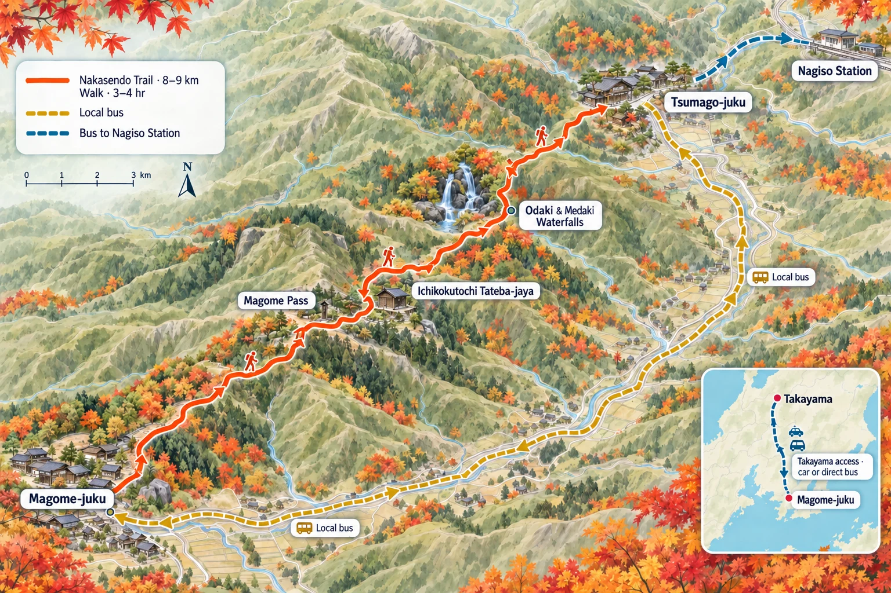
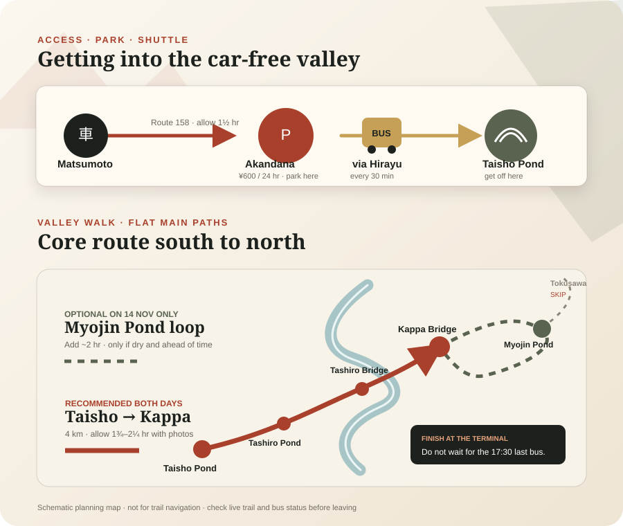

01:20 T2 → 09:35 T1
二人旅15 nights
Following the
autumn light
Tokyo to the Japanese Alps, through old Hida streets and Kyoto maples - then one last clear-sky search for Fuji.
10November-252026
Flights are confirmed. Hotel, excursion and transport reservations remain to be made.
Confirmed international flightsBengaluru ↔ Tokyo NaritaCathay Pacific · via Hong Kong · 10-25 Nov
Airline e-ticket times for both travellers. Confirmed ticket spend: ₹61,881 + ₹69,304 = ₹1,31,185. Recheck the Cathay app before travel.
10:30 T1 → 15:35 T2
14:20 T2 → 18:50 T1
20:45 T1 → 00:15 T2 (26 Nov)
Baggage per person: 2 checked bags up to 23 kg + 1 cabin bag up to 7 kg. Keep passports, medication, valuables and power banks in cabin baggage.
Confirmed routeThe 15-night sequenceThe no-car version is the working itinerary.
01 · 10-12 NovTokyo2 nightsArrival and recovery
02 · 12-13 NovMatsumoto1 nightCastle and old streets
03 · 13-14 NovHirayu Onsen1 nightKamikochi and onsen
04 · 14-18 NovTakayama4 nightsHida, Shirakawa-go, Nakasendo
05 · 18-21 NovKyoto3 nightsFoliage-led days
06 · 21-25 NovTokyo4 nightsFuji and Kamakura flex
Seasonal reality
Kamikochi and Hirayu will be late-season, cold and possibly icy rather than peak-colour stops. Takayama, Kyoto and the final Tokyo stay are the stronger foliage progression; choose the Fuji day by visibility, not by a fixed date.
02
景色 · Places
The landscapes
that shape the trip
Three different expressions of autumn: timber towns, cold mountain light and Kyoto’s maples.
01
14-18 Nov
Four-night base ↗Takayama
River walks, old timber streets and the quieter Higashiyama temples.
02
13 or 14 Nov
Open the day plan ↗Kamikochi
Cold river light, bare larch and the final days of the mountain season.
03
18-21 Nov
Three foliage days ↗Kyoto
Takao or Ohara first, then one temple cluster chosen by live colour.
04
13-14 Nov
Onsen night ↗Hirayu Onsen
A mountain ryokan, outdoor baths and one quiet night at the edge of Okuhida.
05
10 & 21-25 Nov
City days ↗Shinagawa
Waterfront paths, rail energy and an urban contrast to the alpine middle.
06
Optional · 19-20 Nov
Open the Tokyo playbook ↗Kawaguchiko
Choose a lake overnight for Fuji at dawn, or use a clear-sky Tokyo day trip for more flexibility.
Five complete routesChoose one routeCompare the car loops with both public-transport plans.
SDRouteCompact · five-day car loopMatsumoto–Takayama Car LoopVia Hirayu; return the car on 17 Nov13–17 NovCar


10-12 NovTokyo2 nightsArrival
12-13 NovMatsumoto1 nightCollect car next
13-14 NovHirayu1 nightKamikochi
14-17 NovTakayama3 nightsHida + Shirakawa-go
17-18 NovMatsumoto1 nightReturn car
18-21 NovKyoto3 nightsRail via Nagoya
21-25 NovTokyo4 nightsFuji + Kamakura flex
- 13 Nov: collect at opening time, 08:00, from Toyota Matsumoto Station; drive only to Sawando and use the regulated Kamikochi shuttle.
- 15 Nov: Hida-Furukawa by car. 16 Nov: early Shirakawa-go return trip.
- 17 Nov: allow 2½-3 hours Takayama → Matsumoto; return before dark where possible.
- The branch offers ETC-card rental and Toyota lists Matsumoto Station among winter-tyre-standard shops; still confirm the exact vehicle. Do not use this plan unless the rental desk accepts the IDP.
- Approximate driving: 330-370 km. Allow ¥7,000-9,000 for fuel, tolls and parking, excluding the rental.
RBRouteRecommended · lowest frictionTakayama Base by Train & BusPublic transport throughout; four nights in Takayama10–25 NovRail + bus


10-12 NovTokyo2 nightsArrival
12-13 NovMatsumoto1 nightAzusa
13-14 NovHirayu1 nightCoach + Kamikochi
14-18 NovTakayama4 nightsThree day trips
18-21 NovKyoto3 nightsDirect coach
21-25 NovTokyo4 nightsWeather flex
- 13 Nov: reserve Matsumoto 07:40 → Hirayu 09:08, drop bags, then use the Kamikochi shuttle.
- 15 Nov: Hida-Furukawa. 16 Nov: reserved Shirakawa-go day trip.
- 17 Nov: Nakasendo is the first choice; Gero is the easy fallback and Shinhotaka is visibility-dependent.
- 18 Nov: direct Takayama 13:40 → Kyoto 17:55 coach; the 08:00 service is the early alternative.
- No IDP risk, no winter driving and one fewer hotel change than the car version.
GKRouteScenic · longest car loopTakayama–Magome–Kiso Car LoopTakayama 3 + Magome 2 + Kiso 2 nights13–21 NovCar loop


10-12 NovTokyo2 nightsArrival
12-13 NovMatsumoto1 nightCollect car next
13-14 NovHirayu1 nightKamikochi
14-17 NovTakayama3 nightsHida + Shirakawa-go
17-19 NovMagome2 nightsGero + Nakasendo
19-21 NovKiso-Fukushima2 nightsAtera + Narai
21-25 NovTokyo / Fuji4 nightsVia Matsumoto
- 13 Nov: collect at 08:00, drive to Sawando, use the regulated Kamikochi shuttle, then sleep in Hirayu. Recheck the late-season timetable and trail conditions the evening before.
- 14-16 Nov: three Takayama nights are well paced, not excessive: the first is an arrival day, followed by Hida-Furukawa and Shirakawa-go outings. Keep the final afternoon in each day flexible.
- 17 Nov: Takayama → optional Gero stop → Magome. 18 Nov: leave luggage at the Magome stay, drive to Tsumago and park, then use the 10:17 bus or a pre-booked taxi to Magome and walk back to the car.
- 19 Nov: pre-confirm a 10:00-13:00 Atera e-bike, keep luggage concealed in the locked car and treat Nezame-no-Toko as optional. 20 Nov: Narai and Kiso-Hirasawa day trip.
- 21 Nov: refuel and return the car in Matsumoto in the morning, then continue to Tokyo or Kawaguchiko.
- Use this version only with an accepted IDP and written confirmation of studless winter tyres for the exact vehicle.
What to do each day
One main outing each day, with the car loop kept deliberately unhurried.
- TokyoNight 1 of 2Arrive and reset
Land at Narita at 15:35, transfer to the hotel, eat nearby and sleep. No major sightseeing.
- TokyoNight 2 of 2Full neighbourhood day
Use Kagurazaka–Iidabashi, Daikanyama–Nakameguro and Koenji or Nakano; see the consolidated Tokyo playbook.
- Matsumoto1 nightCastle and old streets
Take the Azusa from Shinjuku, then see Matsumoto Castle, Nawate Street and Nakamachi. Confirm the next morning’s car collection.
- Hirayu1 nightKamikochi via Sawando
- 08:00Collect the car in Matsumoto, confirm the winter tyres and keep warm layers, gloves and grippy footwear accessible.
- 09:15–10:15Park at Sawando Bus Terminal, buy the non-reserved return ticket and shuttle into Kamikochi. If the stop is operating, get off at Taisho Pond.
- 10:15–12:30Walk Taisho Pond → Tashiro Pond → Tashiro Bridge → Kappa Bridge, staying on the main paths if there is frost or snow.
- 12:30–14:45Lunch near Kappa Bridge, then add the easy riverside or Dakesawa Marsh section. Skip the longer Myojin walk unless paths are dry and you have a comfortable return-bus margin.
- 15:00 onwardTake a shuttle that reaches Sawando before dusk, drive to Hirayu, check in and finish with the onsen and ryokan dinner.
- TakayamaNight 1 of 3Takayama old town
- 08:30–10:00Have breakfast, check out of Hirayu and drive to Takayama; park once and leave luggage at the accommodation.
- 10:15–12:00Visit Takayama Jinya and catch the last part of the Jinya-mae market before it closes.
- 12:00–14:30Lunch, then explore Sanmachi’s preserved streets, craft shops and sake breweries. The driver should save tastings for after the car is parked for the day.
- 14:30–16:15Walk the lower Higashiyama temple route; use the free Museum of History and Art or Showa-kan instead if it is wet or already getting dark.
- EveningCheck in and reserve a proper Hida beef, hoba-miso or Takayama ramen dinner rather than relying on old-town shops after they close.
- TakayamaNight 2 of 3Hida-Furukawa half-day
- 07:30–08:30Walk Takayama’s Miyagawa Morning Market and riverside before breakfast crowds build.
- 09:00–09:40Drive to Hida-Furukawa and use the free city-hall or station-side parking; leave the car for the whole visit.
- 09:45–12:30Walk the Setogawa canal and white-walled storehouses, the temple lanes and one indoor stop: the Festival Exhibition Hall or Takumikan craft museum.
- 12:30–14:00Have soba or a local lunch, browse the two sake breweries and return to Takayama. Only the non-driver should taste.
- 14:30 onwardChoose one relaxed Takayama extra: Sakurayama Hachimangu and the festival-float hall, Showa-kan plus a café, or simply an onsen and early dinner. Hida Folk Village is optional because Shirakawa-go follows tomorrow.
- TakayamaNight 3 of 3Early Shirakawa-go
- 07:30Leave Takayama early and drive directly to the official Seseragi parking area; do not take the car into the heritage village.
- 08:30–09:30Cross Deai Bridge and do the observation deck first, using the village shuttle if running or the signed walking route if open.
- 09:30–12:00Walk the quieter lanes, irrigation channels and viewpoints, then enter one representative house—Wada or Kanda—and Myozenji if time remains.
- 12:00–13:30Eat an early lunch, complete the southern village loop and return across Deai Bridge before the busiest afternoon period.
- 13:30 onwardDrive back to Takayama for a missed museum, café or onsen. Keep this buffer instead of adding Gokayama; it protects the day against parking queues, cold weather and early darkness.
- MagomeNight 1 of 2Gero stop, then Magome
- 08:30Leave Takayama after breakfast and drive south toward Gero.
- 10:00–12:00Use Gero for a riverside walk, footbath or one pre-checked day-use onsen, followed by an early lunch.
- 12:15–14:30Continue to Magome with a buffer for the mountain roads; do not add another major stop.
- 15:00 onwardCheck in, leave the car and stroll Magome’s sloping old street and viewpoint before shops close and daylight fades. Eat at the accommodation or reserve dinner nearby.
- MagomeNight 2 of 2Magome–Tsumago Nakasendo
Leave the luggage at your Magome accommodation. Drive to Tsumago, park in a designated lot and take the 10:17 bus—or a pre-booked taxi—to Magome. Walk the 8–9 km trail back to Tsumago, explore the old street and Wakihonjin, then finish at your car and drive back to the same Magome stay.
- Kiso-FukushimaNight 1 of 2Atera Valley cycling and Nezame-no-Toko
- 08:30Check out of Magome. Keep suitcases concealed in the locked car and carry passports, money and electronics in the daypack.
- 09:30Reach Atera Valley’s second parking area and complete the pre-confirmed e-bike pickup.
- 10:00–13:00Ride upstream at an easy pace, stopping around Tanuki-ga-fuchi, Kuma/Ushi-ga-fuchi and Bigansui or the campground before turning back.
- 13:00–14:00Return the bicycles and have a quick lunch or packed snack.
- 14:00 onwardAdd Nezame-no-Toko only if the weather, road and daylight are comfortable; otherwise continue directly and check in at Kiso-Fukushima by roughly 15:30–16:00.
- Kiso-FukushimaNight 2 of 2Narai and Kiso-Hirasawa
- 08:30Leave luggage at the accommodation and drive north; park outside Narai’s preserved street.
- 09:15–12:15Walk Narai-juku before the busiest period, choose one historic residence or small museum, and browse the wooden shops.
- 12:15–13:15Have soba, gohei-mochi or a simple local lunch in Narai.
- 13:30–15:00Drive the short distance to Kiso-Hirasawa and focus on lacquerware shops or a workshop rather than another long walk.
- 15:45 onwardReturn to Kiso-Fukushima for Kozenji, the Uenodan old quarter or the public footbath, then have an unhurried final Kiso dinner.
- Tokyo / FujiNight 1 of 4Return car and transfer
Leave after breakfast, refuel and return the car in Matsumoto by late morning. Continue after lunch to Tokyo or Kawaguchiko; add no major sightseeing.
- Tokyo / FujiNight 2 of 4Clear-sky Fuji window
If staying by the lake, use sunrise and the north/east shore before Tokyo. Otherwise, make the day trip only with a strong visibility forecast.
- TokyoNight 3 of 4Public-holiday Tokyo
Choose one walkable neighbourhood and a park or garden with good live autumn colour; reserve any important meal.
- TokyoNight 4 of 4Kamakura or weather swap
Start at Kita-Kamakura, walk selected temple grounds and continue toward Hase or the coast—or use this as the Fuji day if skies are clearer.
- DepartureNarita T2Airport only
Leave the Tokyo hotel around 09:00–09:30 for the 14:20 flight. Keep the morning free of sightseeing.
BKRouteBalanced · fewer hotel nightsGero–Magome–Kiso Car LoopOne Magome night, then Kiso and Kawaguchiko13–20 NovCar + rail


10–12 NovTokyo2 nightsArrival
12–13 NovMatsumoto1 nightCollect car next
13–14 NovHirayu1 nightOnsen first
14–16 NovTakayama2 nightsKamikochi + Shirakawa
16–17 NovMagome1 nightVia Gero
17–19 NovKiso-Fukushima2 nightsNakasendo + valley
19–20 NovKawaguchiko1 nightAfter car return
20–25 NovTokyo5 nightsOne day trip
- This version has no museum or castle-interior priorities: the focus is streets, gardens, scenery, short walks and onsen.
- Sunset is around 16:35–16:45 through this part of the trip. Protect the Magome arrival, Nakasendo walk and Atera Valley daylight rather than adding extra stops.
- Book half-board in Hirayu and Magome where possible. Rural dinner choices close early, and Magome accommodation may require arrival before 17:00.
- Keep passports, money and electronics with you. If luggage remains in the car at Tsumago or Atera, conceal it before reaching the parking area.
- 19 November is the tightest transfer. If Narai runs late, skip Hirasawa and protect the Matsumoto car-return appointment and Kawaguchiko connection.
- Confirm the accepted IDP, studless winter tyres, ETC card and roadside cover in writing for the exact rental vehicle.
What to do each day
Later starts, two Takayama nights and only one major outing per day.
- TokyoNight 1 of 2Arrival + Shinjuku after dark
Land at Narita Terminal 2 at 15:35, transfer to Shinjuku, then use the evening for Omoide Yokocho, Kabukicho and Shin-Okubo. Allow 1½–2 hours for immigration, bags and IC-card setup.
- TokyoNight 2 of 2Full neighbourhood day
Use Kagurazaka–Iidabashi, Daikanyama–Nakameguro and Koenji or Nakano. Skip repeat headline sights and pack after dinner.
- Matsumoto1 nightCastle exterior and old streets
Use the 10:00 Azusa if an earlier departure requires an uncomfortable wake-up. After lunch, walk the castle exterior and moat, Nawate Street, Yohashira Shrine and Nakamachi. Confirm the rental collection.
- Hirayu1 nightCollect car and slow Hirayu afternoon
- 09:30Collect the car in Matsumoto; photograph the vehicle, confirm studless winter tyres, ETC arrangements and emergency numbers.
- 11:15–12:00Reach Hirayu, leave luggage at the ryokan and have lunch.
- AfternoonWalk the village, footbath or Hirayu waterfall only if paths are dry and comfortable. Do not force Kamikochi into this day.
- EveningRyokan onsen and dinner. Half-board is strongly preferable.
- TakayamaNight 1 of 2Kamikochi from Akandana
- 09:00–09:30Check out, leave larger luggage safely in the car and park at Akandana. Take the shuttle toward Kamikochi.
- 10:00–12:15Get off at Taisho Pond if operating, then walk via Tashiro Pond and the riverside to Kappa Bridge. Stay on the main route if there is frost or snow.
- 12:15–14:00Lunch or packed food near Kappa Bridge, a short riverside extension if conditions allow, then return by shuttle.
- 14:00–16:30Collect the car and drive to Takayama before dark. Check in, park once and eat near the hotel.
- TakayamaNight 2 of 2Shirakawa-go and Takayama
- 09:35Take the reserved Nohi bus from Takayama; leave the car parked.
- 10:25–11:30Reach Shirakawa-go and go directly to the viewpoint, walking or using the local shuttle according to conditions.
- 11:30–12:50Walk the village lanes, rice fields and suspension bridge; have a snack rather than a long lunch.
- 13:15–14:05Return by reserved bus. For a non-reserved service, queue 20–30 minutes early.
- 14:15 onwardHave a late lunch, then walk Sanmachi and the Miyagawa riverside. Skip interiors and finish before shops close.
- Magome1 nightGero Onsen, then Magome
- 09:30Check out and drive from Takayama to Gero.
- 10:30–12:45Walk the riverside and use a footbath or prearranged day-use onsen. Verify bath hours shortly before travel.
- 12:45–13:30Lunch in Gero. If running late, keep only the riverside, footbath and lunch.
- 13:30–15:45Drive to Magome, check in and walk the sloping post-town street before dusk.
- EveningEat at the accommodation; do not depend on the village restaurants remaining open.
- Kiso-FukushimaNight 1 of 2Magome–Tsumago Nakasendo
- 09:15Check out, drive to a designated Tsumago car park and keep valuables in the daypack.
- 10:17Take the local bus from Tsumago to Magome; carry small cash and confirm the seasonal timetable again before travel.
- 10:45–14:15Walk the 8–9 km trail back to Tsumago with short rests. The direction is generally easier and finishes at the car.
- 14:15–15:30Walk Tsumago’s old street outdoors and have a late snack. Skip Wakihonjin unless you change your mind about interiors.
- 15:30 onwardDrive to Kiso-Fukushima and check in before dinner.
- Kiso-FukushimaNight 2 of 2Atera Valley and Nezame-no-Toko
- 10:00Leave after breakfast. Use short roadside viewpoints and a manageable valley walk rather than relying on seasonal bicycle rental.
- 12:30–13:30Lunch around Nojiri, Agematsu or from a prepared picnic, depending on what is open.
- 13:30–15:15Visit Nezame-no-Toko. Use the upper viewpoint if wet rocks, fatigue or fading daylight make the descent undesirable.
- 16:00 onwardReturn to Kiso-Fukushima for the riverside, footbath and an unhurried evening.
- Kawaguchiko1 nightNarai, return car and transfer
- 09:15Check out and drive to Narai. Park outside the preserved street.
- 10:00–11:30Walk Narai-juku and browse exterior streets and shops; do not add house interiors.
- 11:40–12:15Make a brief Kiso-Hirasawa lacquerware stop only if the morning is on time.
- 12:15–14:00Drive to Matsumoto, refuel and return the car. Skip Hirasawa if needed—this appointment controls the day.
- AfternoonTravel by train via Otsuki to Kawaguchiko. Expect an evening arrival, so reserve dinner or buy food before the final train.
- TokyoNight 1 of 5Fuji morning, then neighbourhoods
Use the clearest lakeside hours, reach Tokyo in the early afternoon, drop bags and keep sightseeing: choose Nakano–Koenji from a Shinjuku hotel, or Kappabashi–Kuramae–Akihabara from an eastern hotel.
- TokyoNight 2 of 5Tsukiji, Hamarikyu and east Tokyo
Reach Tsukiji around 08:30, continue to Hamarikyu, then use the afternoon for Kiyosumi-Shirakawa and Monzen-Nakacho.
- TokyoNight 3 of 5Rikugien, Yanaka and Nezu
Leave bags at the Asakusabashi hotel, enter Rikugien near opening, then continue through Yanaka, Sendagi and Nezu before a late dinner.
- TokyoNight 4 of 5Movable landscape slot
Use the 48-hour forecast to choose Izu, Chichibu–Nagatoro, Kamakura or a dense Tokyo day; 23 November is a public holiday.
- TokyoNight 5 of 5Second movable full-day slot
Use whichever priority remains after the weather-led choice. Kamakura is the robust default; see the consolidated Tokyo playbook.
- DepartureNarita T2Airport only
Leave Shinjuku around 09:00–09:30 for the 14:20 flight from Narita Terminal 2. Keep the morning free of sightseeing.
PTRouteNo car · booked Kiso staysMagome & Kiso by Public TransportAB Hotel, Nezame Hotel, Nakasendo and lower Atera Valley10–25 NovRail + bus
10–12 NovTokyo2 nightsArrival
12–13 NovMatsumoto1 nightAzusa
13–14 NovHirayu1 nightCoach + onsen
14–16 NovTakayama2 nightsKamikochi + Shirakawa
16–17 NovMagomeAB Hotel, Nakatsugawa · 1 nightPost town
17–19 NovKiso-FukushimaNezame Hotel, Agematsu · 2 nightsNakasendo + Atera
19–20 NovKawaguchiko1 nightEvening arrival
20–25 NovTokyo5 nightsCity + Kamakura
- Carry the bags between hotels. On 17 November, use only the same-day Magome–Tsumago luggage service: with two large suitcases and two 40-litre backpacks, hiking the trail without it is not practical. Budget ¥4,000 for four pieces; drop by 11:30 and collect by 17:00.
- Board rural buses at their starting point where possible and keep the backpacks compact. Large coach holds are straightforward; small local buses have limited floor space.
- AB Hotel is reached by local bus from Nakatsugawa Station to Tegano-naka. Nezame Hotel is reached from Agematsu Station by town bus to Chugakko; the hotel does not provide a shuttle.
- Buy lunch before the Nakasendo and Atera days. Magome, Tsumago and the Kiso towns have cafés and restaurants, but choices thin out after mid-afternoon and closing days vary.
- The 17 November late-start sequence has only a short margin before the luggage counter closes. Confirm the service directly; use the earlier 08:38 local bus from Tegano-naka if it will not hold four pieces.
- Planning times reflect current published schedules and can change before November 2026. Recheck every rural leg when autumn timetables are released.
What to do each day
Late starts where they work, carried luggage between bases and the fewest sensible transfers.
- TokyoNight 1 of 2Arrival + Shinjuku after dark
Transfer from Narita to Shinjuku, check in, then use the neighbourhood until late.
- TokyoNight 2 of 2Full neighbourhood day
Use Kagurazaka–Iidabashi, Daikanyama–Nakameguro and Koenji or Nakano; skip repeat headline sights.
- Matsumoto1 nightAzusa and old streets
Take an Azusa around 10:00. After lunch, walk the castle exterior and moat, Nawate, Yohashira Shrine and Nakamachi.
- Hirayu1 nightSlow Hirayu afternoon
After an 08:30 wake-up, take a reserved mid-morning direct coach from Matsumoto to Hirayu. Check in or leave bags, have lunch, then choose the village, footbath or waterfall if paths are comfortable. Finish with the onsen.
- TakayamaNight 1 of 2Kamikochi, then Takayama
Ask the Hirayu stay to hold the large bags after checkout. Around 09:30, shuttle to Kamikochi and walk Taisho Pond → Tashiro Pond → Kappa Bridge. Return around 14:00–14:30, collect the bags and take the direct bus to Takayama.
- TakayamaNight 2 of 2Shirakawa-go
Use the reserved 09:35 Nohi bus, visit the viewpoint and village lanes, and return around 14:05. Spend the remaining daylight in Takayama’s old streets and by the river.
- NakatsugawaAB Hotel · 1 nightTakayama → Magome → AB Hotel
- 08:00–10:45Take the reserved direct Nohi coach to Magome with all luggage in the hold. This is the trip’s only necessary pre-08:30 wake-up.
- 10:45–15:30Store the bags at Magome BASE, have lunch and explore the post-town street without rushing.
- 15:50–16:15Take the Kitaena bus from Magome to Nakatsugawa Station.
- 16:45 onwardUse the local bus to Tegano-naka, then walk to AB Hotel. Eat near the hotel or buy dinner at Nakatsugawa Station before boarding.
- AgematsuNezame Hotel · night 1 of 2Nakasendo trail, then Nezame
- 09:56–10:08Take the local bus from Tegano-naka to Nakatsugawa Station, carrying every bag.
- 10:45–11:10Bus to Magome. Immediately hand all four pieces to the same-day luggage counter before its 11:30 cutoff.
- 11:15–14:30Walk the 8–9 km Nakasendo trail to Tsumago. Carry water and a packed lunch; daylight matters more than a sit-down meal.
- 14:30–16:00See Tsumago’s old street and collect the bags. Take the 16:14 bus to Nagiso.
- Around 17:00Use the next direct local train to Agematsu, then the 18:05 town bus to Chugakko and walk to Nezame Hotel. Recheck the exact railway minute before booking.
- AgematsuNezame Hotel · night 2 of 2Lower Atera Valley and Nezame-no-Toko
- 09:11–09:52Leave luggage at the hotel; bus from Chugakko to Agematsu, then local train to Nojiri.
- 10:20–11:45Walk about 30 minutes to Atera Valley and see only the lower-valley water and viewpoints. Turn back early enough to protect the sparse train.
- Around 12:25Train north to Kiso-Fukushima for lunch, riverside and Uenodan. Check the live schedule before setting out.
- Around 15:10Take the through town bus toward Chugakko. Visit Nezame-no-Toko from the hotel side before dark; use the upper viewpoint if rocks are wet.
- Kawaguchiko1 nightNarai and Hirasawa, then the lake
- 09:11Town bus to Agematsu with every bag; take the next direct local train north to Narai, currently around 10:55.
- Late morningStore the luggage at Narai’s staffed tourist office, walk the old street, then collect it before continuing one stop to Kiso-Hirasawa.
- AfternoonBrowse lacquerware with the bags, then take a local train to Shiojiri. Reserve an Azusa that stops at Otsuki and change once there for Kawaguchiko.
- EveningExpect arrival around 20:00–21:00 if Hirasawa is retained. Buy dinner before the final leg and notify the accommodation of the late check-in.
- TokyoNight 1 of 5Fuji morning, then neighbourhoods
Use the clearest lakeside hours, reach Tokyo in the early afternoon, drop bags and continue through Nakano–Koenji or Kappabashi–Kuramae–Akihabara.
- TokyoNight 2 of 5Tsukiji, Hamarikyu and east Tokyo
Reach Tsukiji around 08:30, continue to Hamarikyu, then spend the afternoon around Kiyosumi-Shirakawa and Monzen-Nakacho.
- TokyoNight 3 of 5Rikugien, Yanaka and Nezu
Leave bags at Asakusabashi, enter Rikugien near opening, then continue through Yanaka, Sendagi and Nezu.
- TokyoNight 4 of 5Izu or Chichibu–Nagatoro
Choose Izu for maximum coastal spectacle or Chichibu–Nagatoro for late-autumn colour, a river boat, ropeway and nostalgic countryside.
- TokyoNight 5 of 5Kamakura
Leave around 09:00–09:30 for Kita-Kamakura, a small number of temple grounds, Hase and the coast.
- DepartureNarita T2Airport only
Leave Shinjuku around 09:00–09:30 for the 14:20 flight.
16–17 November · four practical versionsTakayama → Magome and TsumagoCompare car or bus, with a Takayama return or Magome overnight.
Why are there four plans?
Two decisions create four combinations
Choose how you travel from Takayama and where you sleep on 16 November. Each box below is one complete plan.
Transport ↓
Night →
Night →
Return to Takayama
Stay in Magome
Rental car
Option 1Drive day tripOption 2 · Best by carDrive + overnight
No car
Option 3Direct-bus day tripOption 4 · Best without carDirect bus + overnight

Start in Magome and finish in Tsumago. This direction has a shorter climb followed by the longer descent.
If your car is in Magome, take the local bus from Tsumago back to it. If staying overnight, move the car to Tsumago and take the bus before walking.
Sunset is around 16:40. Do not start the trail after the 12:47–13:15 repositioning bus.
Drive + sleep in Takayama
Park in Magome, walk to Tsumago, take the local bus back to your car, then drive to Takayama after dark.
Leave Takayama; reach Magome around 11:15.
Park, see Magome and eat an early lunch.
Walk Magome → Tsumago.
Explore Tsumago and reach the bus stop.
Local bus Tsumago → Magome; collect the car.
Drive back to Takayama in darkness.
Drive + sleep in Magome
Enjoy Magome on 16 November. Next morning, park in Tsumago, take the bus to Magome first, then walk back to your car without a deadline.
Drive Takayama → Magome; arrive around 11:15.
Park at the inn, check in and explore Magome before dusk.
Drive about 30 minutes to Tsumago and park.
Local bus Tsumago → Magome.
Walk Magome → Tsumago, finishing at your car.
Lunch or explore Tsumago, then continue through Kiso.
No car + sleep in Takayama
The reserved Nohi bus drops you at Magome and collects you at Tsumago. No local bus or taxi is needed.
Direct Nohi bus Takayama → Magome.
Quick preparation; buy food before starting.
Walk Magome → Tsumago.
Brief Tsumago visit; be early for the coach.
Direct Nohi bus Tsumago → Takayama.
No car + sleep in Magome
Stay in Magome, send your bags ahead, walk to Tsumago next morning, then take a local bus to Nagiso Station and continue by train.
Direct Nohi bus Takayama → Magome; arrive 10:45.
Leave bags at the inn and explore Magome.
Give luggage to the same-day transfer counter.
Walk Magome → Tsumago.
Lunch, explore Tsumago and collect bags.
Local bus Tsumago → Nagiso, then train onward.
Which one should you choose?
Have a car and can change hotel? Choose Option 2. No car and can stay in Magome? Choose Option 4. Keeping the Takayama hotel? Option 3 is cleaner than Option 1; choose Option 1 only if you specifically want the car that day.
Direct Takayama bus ↗2026 local timetable ↗Trail + luggage service ↗Official trail map ↗Takayama–Magome drive ↗Reddit: car-return issue ↗Trail walkthrough vlog ↗
Times are planning estimates for 16–17 November 2026. Reserve the direct Nohi bus; local buses are cash only. INR uses ¥1 ≈ ₹0.613. Recheck weather, trail status and timetables shortly before travel.
13 or 14 November · closes 15 NovemberKamikochi day planPark at Akandana, shuttle to Taisho Pond and finish at the main bus terminal.
Which day?Choose the clearer forecast
If both days are equally clear, 14 November is the better walking day: a 09:20 shuttle gives enough time for the core walk and optional Myojin loop. Use 13 November if 14 November looks wet, snowy or clouded; the shorter afternoon still covers Kamikochi’s signature sights.

Akandana Parking
Private cars cannot enter Kamikochi. Use the official 850-space car park outside Hirayu; its bus stop is the shuttle’s starting point.
- Parking
- ¥600 / 24 hr
≈ ₹370 per car - Navigation
- Hirayu 791-38
Okuhida, Takayama
No reservation
Buy at Akandana’s machine and queue 15–20 minutes early. Services are first-come, first-served and run every 30 minutes.
- Return / adult
- ¥2,800
≈ ₹1,715 - Two adults + car
- ¥6,200
≈ ₹3,795 total
Arrive Hirayu around 11:30
Park, buy tickets and aim for Akandana 11:50 → Hirayu 12:00 → Taisho Pond 12:16. If missed, the next Akandana bus is 12:20.
Get off at Taisho Pond. Walk via Tashiro Pond and Tashiro Bridge to Kappa Bridge; allow 1¾–2¼ hours with photos.
Quick packed lunch, Kappa Bridge and a short Azusa River/Dakesawa Marsh wander. Do not add Myojin Pond.
Shuttle from Kamikochi Terminal → Hirayu 15:55/16:25 → Akandana 16:00/16:30.
Time in KamikochiAbout 3¼–3¾ hours · core sights without rushing
Leave Hirayu around 09:00
Akandana shuttle → Hirayu 09:30 → Taisho Pond 09:46. Closing-weekend traffic is possible, so queue early.
Taisho Pond → Tashiro Pond → Tashiro Bridge → Kappa Bridge, arriving roughly 11:30–12:00.
Lunch. If paths are dry and energy is good, add the two-hour Myojin Pond loop; admission is ¥500 / ≈ ₹305 per adult.
Return shuttle → Hirayu 14:55/15:25 → Akandana 15:00/15:30, leaving daylight for the onward drive.
Time in KamikochiAbout 4½–5¼ hours · core route plus optional Myojin
Core walk
Taisho Pond → Tashiro Pond → Kappa BridgeAbout 4 km and mostly flat. It gives the best variety for the time: pond reflections, marsh, river and the classic bridge view.
Myojin loop
Kappa Bridge → Myojin Pond → Kappa BridgeAdd roughly two hours and 6–7 km. Keep it for 14 November, dry paths and a comfortable return-bus margin.
Overreaching
Tokusawa, mountain trails and the final busDo not combine Taisho and Myojin on the late-start day. Skip higher routes if there is snow or ice, and never make the 17:30 last bus the plan.
Before leavingWeather decides
Check the live webcam, trail notices and Nohi Bus status. Use 13 November if it is the only clear day.
Late-season realityWinter, not peak foliage
Expect bare larch, frost and possible snow. Sunset is about 16:43; the valley becomes shaded earlier.
CarryFood + winter layers
Pack lunch and water. Wear thermal layers, fleece/down, shell, gloves, beanie and grippy waterproof shoes.
DrivingConfirm winter tyres
Route 158 and the Hirayu approach can be icy. Keep the car at Akandana rather than searching for informal parking.
INR estimates use ¥1 ≈ ₹0.612 on 20 September 2026 and are rounded. Recheck fares, exchange rate, weather and operating status shortly before travel; the 2026 shuttle season ends after 15 November.
Accommodation reservationsBooked stays and active optionsBrief room notes, station access and the conservative price used in the budget.
Preferred Tokyo sequenceHouse Ikebukuro → APA Asakusabashi
Keep House Ikebukuro for 20–22 Nov and APA Hotel Asakusabashi Ekimae for 22–25 Nov.
Branch to resolveNight of 19 November
The current House booking starts on 20 Nov. Add 19 Nov only if Kawaguchiko becomes a Tokyo day trip rather than an overnight.
Hotel Opera
Economy double, private shower, room-only; late 20:00 check-in.
- Nearest
- Ōkubo 2 min · Shin-Ōkubo 3 min
- Main station
- Shinjuku ~15 min walk / one JR stop
Hotel Siena
Standard double, private bath, room-only. Higher-priced option used for budgeting.
- Nearest
- Seibu-Shinjuku ~7 min · Higashi-Shinjuku ~8 min
- Main station
- JR Shinjuku ~8-11 min walk
Hotel Iidaya
Economy double, room-only; confirmation lists one 90-130 cm bed, so verify comfort for two.
- Main station
- JR Matsumoto Castle Exit · 1 min walk
- Bus terminal
- Across the station area · about 3-5 min
Yunohana Fuwari Yumotokan
Japanese futon room, shared bath and room-only - this is not the earlier half-board assumption.
- Nearest transport
- Hirayu Bus Terminal · about 4-5 min walk
- Rail connection
- Takayama Station · roughly 60 min by bus
Hotel Hana
Japanese-style futon room; smoking room; breakfast included.
- Main station
- Takayama Station · ~590 m / 7 min
- Bus terminal
- Nohi Bus Center · about 5-10 min
AB Hotel Nakatsugawa
The practical available base for the no-car route; use the local bus rather than walking from the station with four bags.
- Nearest bus
- Tegano-naka · short walk
- Main station
- Nakatsugawa · local bus connection
Nezame Hotel
Well placed for Nezame-no-Toko and workable for lower Atera Valley. There is no hotel shuttle.
- Nearest bus
- Chugakko · about 2 min walk
- Main station
- Agematsu · 7-8 min by town bus
Smart Place Inn Kyoto Nijojo-mae
Twin room, private bath, room-only; convenient subway base by Nijō Castle.
- Nearest
- Nijōjō-mae subway · ~4 min
- Main station
- Kyoto Station · roughly 20 min by bus/taxi
Guest House Hitsujian
Two futons and shared bath; rooms are not lockable or soundproof. Higher-priced option used.
- Nearest
- Nijōjō-mae subway · ~500 m / 8 min
- Main station
- Kyoto Station · roughly 20 min by bus/taxi
House Ikebukuro
Economy Japanese-style room for up to three with three single futons/beds. Shared bathroom and shower; free Wi-Fi, air-conditioning and blackout curtains.
- Access
- Ikebukuro C1 ~1 min · metro ~3 min · JR ~10 min
- Why this wins
- Best mix of sleep setup, west-Tokyo access and value
Lake House Kawaguchiko
Mountain-view twin futon room with shared bathroom; room-only. Keep only for the Fuji-overnight version.
- Main station
- Kawaguchiko · ~2.5 km / ~35 min walk
- Practical transfer
- Use local bus or taxi with luggage
Guesthouse Honobono
Mountain-view futon room, shared bath; free station shuttle by advance request. Keep only for the Fuji-overnight version.
- Main station
- Kawaguchiko · 2.2 km / ~26 min walk
- Best transfer
- Pre-arranged guesthouse shuttle
APA Hotel Asakusabashi Ekimae
13 m² standard room with private bath. Strongest overall base for east Tokyo, Akihabara and the airport departure.
- Access
- JR East Exit / Toei A3 · about 2 min walk
- Airport day
- Direct Narita-bound trains run on the Toei Asakusa Line
Matsumoto–Takayama Car Loop gaps
This route still needs Matsumoto for 17-18 Nov, and the current Takayama booking runs through 18 Nov. Adjust both only if that route is chosen. Personal details and booking identifiers are deliberately excluded from this public page.
Takayama–Magome–Kiso Car Loop gaps
This route needs Takayama changed to 14-17 Nov, plus Magome for 17-19 Nov and Kiso-Fukushima or a nearby Kiso base for 19-21 Nov. Cancel Kyoto only after the car, accepted IDP and winter tyres are confirmed.
Gero–Magome–Kiso Car Loop decision
Return the car in Matsumoto on 19 Nov. Either continue to Kawaguchiko for one night and reach House Ikebukuro on 20 Nov, or go straight to Tokyo and add the missing 19 Nov night before using Fuji as a day trip. The Tokyo-day-trip version costs roughly ¥6,460–6,860 (₹3,900–4,200) more in transport for two, plus any hotel-price difference; it buys easier luggage handling and weather flexibility, not a saving.
Tokyo cancellation order
20–22 Nov: House Ikebukuro first; TenTen Guesthouse second only for its ₹13.5k price, then Asakusa Central, Sakura Nippori and Hotel Opera. TenTen is a 9 m² bunk-bed room with shared bath; House is also shared-bath but has three separate sleeping spaces. 22–25 Nov: keep APA Asakusabashi; APA Akihabara is the closest substitute, with the Ikebukuro options behind it unless Chichibu becomes the overriding priority.
Magome & Kiso public-transport bookings
Keep AB Hotel on 16 November and Nezame Hotel on 17–19 November. They avoid another accommodation search, but require the Tegano-naka and Chugakko local buses. Do not cancel them for an unavailable Magome or Kiso-Fukushima room.
Selected itinerary · Gero–Magome–Kiso Car LoopDay by day16 calendar dates · 15 nights
Rail/bus Rental car Slow day
10 NovArrive → Shinjuku after darkTokyo · 1/2
Plan
- Land at Narita Terminal 2 at 15:35. Allow 1½–2 hours for immigration, bags, cash and IC-card setup.
- Take Narita Express or an airport bus to Shinjuku, check in, then use the evening for Omoide Yokocho, Kabukicho lights and Korean food around Shin-Okubo.
- Complete Visit Japan Web before landing and carry a compact first-night essentials kit.
11 NovNikko foliage day tripTokyo · 2/2
Plan
- Take the morning Tobu Limited Express to arrive around 09:39, then use the World Heritage bus for Shinkyo, Shoyoen, Rinnoji, Toshogu and Futarasan.
- Prefer the direct 16:20 Revaty return for a calm six-hour visit; use the 15:50 Shimo-imaichi connection only when an earlier Tokyo evening matters more.
- Pack after dinner and reconfirm the next morning's Azusa departure.
12 NovTokyo → MatsumotoMatsumoto · 1/1
Plan
- Take Azusa 9, Shinjuku 09:00 → Matsumoto 11:39. Leave bags at a station-side hotel.
- Walk Matsumoto Castle, Nawate Street and Nakamachi; confirm the rental documents, branch location and 09:30 collection tomorrow.
13 NovCollect car → HirayuHirayu · 1/1
Plan
- 09:30: collect the car in Matsumoto; photograph it and confirm studless tyres, ETC arrangements and emergency numbers.
- 11:15–12:00: reach Hirayu, leave luggage and have lunch.
- Use the afternoon for the village, a footbath or Hirayu waterfall only if paths are dry. Do not force Kamikochi into this day.
14 NovKamikochi → TakayamaTakayama · 1/2
Plan
- 09:00–09:30: park at Akandana and take the shuttle toward Kamikochi.
- Get off at Taisho Pond if operating, then walk via Tashiro Pond and the riverside to Kappa Bridge. Stay on the main path if icy.
- 14:00–16:30: return by shuttle, collect the car and drive to Takayama before dark.
15 NovShirakawa-go + TakayamaTakayama · 2/2
Plan
- Leave the car parked and take the reserved 09:35–10:25 Nohi bus to Shirakawa-go.
- Go first to the viewpoint, then walk the lanes, fields and suspension bridge.
- Return around 13:15–14:05; have a late lunch and finish with Sanmachi and the Miyagawa riverside.
16 NovTakayama → Gero → MagomeMagome · 1/1
Plan
- 09:30: check out and drive to Gero.
- 10:30–13:30: riverside walk, footbath or prearranged day-use onsen, then lunch. Shorten Gero immediately if running late.
- 13:30–15:45: drive to Magome, check in and walk the sloping post-town street before dusk.
17 NovMagome–Tsumago NakasendoKiso-Fukushima · 1/2
Plan
- 09:15: check out, drive to a designated Tsumago car park and keep valuables in the daypack.
- 10:17–10:45: local bus Tsumago → Magome; carry cash.
- 10:45–14:15: walk the 8–9 km trail back to Tsumago, finishing at the car.
- Explore Tsumago briefly, then drive to Kiso-Fukushima before dinner.
18 NovAtera Valley + Nezame-no-TokoKiso-Fukushima · 2/2
Plan
- Leave around 10:00. Use short Atera Valley viewpoints and a manageable walk rather than relying on seasonal bicycle rental.
- Have lunch around Nojiri or Agematsu, or carry a picnic if opening hours are uncertain.
- 13:30–15:15: visit Nezame-no-Toko; use the upper viewpoint if rocks are wet or daylight is fading.
19 NovNarai → return car → KawaguchikoKawaguchiko · 1/1
Plan
- 09:15: check out and drive to Narai; walk the preserved street from roughly 10:00–11:30.
- Stop briefly at Kiso-Hirasawa only if on time.
- 12:15–14:00: drive to Matsumoto, refuel and return the car.
- Continue by train via Otsuki to Kawaguchiko; expect an evening arrival.
20 NovFuji morning → full Tokyo eveningTokyo · 1/5
Plan
- Start early with the clearest available north- or east-shore Fuji view, then travel to Tokyo before lunch if practical.
- From a Shinjuku hotel, use the afternoon and evening for Nakano Broadway, Koenji's shopping streets, vintage stores and izakaya.
- From an eastern hotel, use Kappabashi before shops close, then Kuramae, Akihabara after dark and dinner under the tracks around Kanda.
21 NovTsukiji + Hamarikyu + east TokyoTokyo · 2/5
Plan
- Reach Tsukiji Outer Market around 08:30 for breakfast and browsing; Saturday is the clean fit before Sunday and the 23 November holiday.
- Walk to Hamarikyu, then continue after lunch to Kiyosumi-Shirakawa's garden, cafés and warehouse streets.
- Finish around Monzen-Nakacho and its riverside or small restaurants.
22 NovMove hotel + Rikugien + Yanaka–NezuTokyo · 3/5
Plan
- Move from House Ikebukuro to APA Asakusabashi via Akihabara and leave the bags before check-in, then enter Rikugien near 09:00.
- Continue through Yanaka Cemetery, Yanaka Ginza, Sendagi and selected Nezu backstreets, using trains between clusters if needed.
- Return for check-in, then add Asakusabashi's izakaya streets, Akihabara after dark or Kanda under the tracks.
23 NovIzu or Chichibu–NagatoroTokyo · 4/5
Plan
- Maximum spectacle: Mount Omuro chairlift, the Jogasaki lava coast and an ocean-view onsen on the Izu Peninsula.
- Autumn countryside: Laview to Chichibu, Nagatoro river boat, Hodosan Shrine and ropeway, Iwadatami, then local dinner near Seibu-Chichibu.
- Choose using the 48-hour visibility, wind and river-operation reports; reserve the long-distance seats either way.
24 NovKamakura day tripTokyo · 5/5
Plan
- Leave around 09:00–09:30 for Kita-Kamakura.
- Choose a small number of temple grounds and continue toward Hase and the coast.
- If tired or the weather is poor, make this another Tokyo day.
25 NovDirect train → Narita T2-
Plan
- CX527 departs Narita Terminal 2 at 14:20. Check out around 08:50 and target the current 09:17 Narita Airport-bound Access Express from Asakusabashi; stay on the train through Oshiage onto the Keisei line.
- This is an unreserved commuter train. Recheck the weekday timetable in November; the current 09:38 airport-bound service is the fallback.
- Keep passports, tickets, tax-free purchases and essential medication accessible.
11 November · Shinjuku baseNikko day tripOne compact operating plan: trains, passes, boarding points, foliage stops and return choices.
Recommended booking09:39 in · 16:20 out
SPACIA X outbound and direct Revaty return. About six useful hours in central Nikko, back in Shinjuku around 19:00.
- Book
- 11 Oct · 05:30 IST
- For two
- ≈₹8,010
- Pass
- World Heritage
Do not miss the train
Metro/Toei Asakusa and Tobu Asakusa are not the same station entrance. Exit the subway and walk to the Tobu station inside the EKIMISE/Tobu building. With a Nikko Pass, use its digital screen or QR—not Suica—for the Tobu base fare. Limited Express departures use platforms 3/4; keep the reservation page ready for the platform check.
01The dayCore route + optional final stop
- Leave Shinjuku
Target Tobu Asakusa by 07:20; keep 25–30 minutes for the separate station entrance and platform check.
- SPACIA X · Asakusa → Tobu-Nikko
Kita-senju boarding alternative: 08:03. Both arrive at 09:39.
- Arrive and use the included bus
Tobu-Nikko → Shinkyo. Photograph the bridge, then walk uphill into the heritage precinct.
- Shinkyo → Shoyoen → Rinnoji
Prioritise Shoyoen for lower-Nikko foliage; continue through Rinnoji without backtracking.
- Toshogu → Futarasan
Allow about 90 minutes for Toshogu, then 30 minutes for Futarasan.
- Lunch near Nishi-sando
Keep it to roughly 40 minutes during foliage season.
- Taiyuin; add Tamozawa only if moving well
Taiyuin is the efficient final sight. Tamozawa garden is the optional foliage extension for the 16:20 return.
- Bus back to Tobu-Nikko
Target the station by 15:50 for the direct 16:20 train.
- Revaty Kegon → Asakusa
Arrive 18:15; expect Shinjuku around 19:00 for dinner.
02Train choicesBoarding and return trade-offs
| Outbound from Asakusa | Tobu-Nikko | Verdict |
|---|---|---|
| 07:00 Revaty | 08:54 | Maximum sightseeing time; earlier Shinjuku start. |
| 07:50 SPACIA X | 09:39 | Recommended balance of departure time and a full central-Nikko visit. |
| 09:00 SPACIA X | 10:50 | Too late for the compact shrine-and-foliage plan. |
Asakusa 07:50
SPACIA X → Tobu-Nikko 09:39. Use Tobu Asakusa platforms 3/4. Best if you want the pass workflow exactly as Tobu documents it.
Kita-senju 08:03
Same SPACIA X and arrival. Book the reservation from Kita-senju, reach the Tobu outbound platforms 1/2 and show the digital pass at a staffed gate. Reconfirm pass entry with Tobu before travel.
| Return | Tokyo arrival | Use it when |
|---|---|---|
| 14:57 Tobu-Nikko → 16:45 Asakusa | Shinjuku ≈17:30 | Maximum Tokyo evening; central Nikko feels compressed. |
| Local to Shimo-imaichi + 15:50 SPACIA X → 17:35 | Shinjuku ≈18:20 | Middle option. Leave Tobu-Nikko around 15:20 and confirm the local connection. |
| 16:20 Revaty direct → 18:15 Asakusa | Shinjuku ≈19:00 | Recommended: longest visit, simplest boarding and no transfer. |
03Tickets and costsPass versus paying separately · two adults
World Heritage Pass + Limited Express
≈₹8,010 totalApproximately ₹3,650 for both passes plus ₹4,360 for both Limited Express reservations. The pass supplies the required base fare and buses in the heritage area.
Base fares + Limited Express
≈₹7,760 walking · ₹8,490 with busesApproximately ₹3,400 basic rail fare plus ₹4,360 reservations. Add about ₹730 for two World Heritage bus day passes; the Nikko Pass is therefore better when using buses.
Also allow approximately ₹650–₹800 combined for Shinjuku ↔ Asakusa/Kita-senju city transport. Shrine admissions and food are separate. INR figures are planning estimates and will move with the card exchange rate.
04Booking and boarding checklistKeep this open on the morning
- At 05:30 IST on 11 October, reserve the correct departure station, train and two Standard seats.
- Buy two digital Nikko Pass World Heritage Area passes—not vouchers requiring collection. Do not buy the more expensive All Area pass for this plan.
- Save both pass screens and Limited Express confirmations offline. Ticketless reservations need no paper collection; seat numbers appear after payment.
- If using Asakusa, navigate specifically to Tobu Asakusa Station / EKIMISE, not merely “Asakusa Station.”
- If using Kita-senju, book from Kita-senju and use the staffed Tobu gate; reconfirm digital-pass entry with Tobu closer to November.
- Use the Nikko Pass for the Tobu base fare and local buses. Do not tap Suica for the covered Tobu journey.
Tokyo · 10–12 & 19/20–25 NovemberOne flexible Tokyo playbookStay decisions, full city days, Fuji, Kamakura, Chichibu, Izu and the airport plan in one place.
20–22 Nov · preferredHouse Ikebukuro
→
¥30,213 · ≈₹18.4k · two nights
22–25 Nov · preferredAPA Asakusabashi
→
₹30k · three nights
25 Nov · CX527Narita T2 · 14:20
Target the 09:17 direct train
House Ikebukuro
Best balance of comfort, value and access for the first block. The Economy Japanese-style room has three separate single sleeping spaces, air-conditioning, blackout curtains and free Wi-Fi; the bathroom and shower are shared.
- 2-20-1 Ikebukuro, Toshima-ku; about 1 minute from C1, 3 minutes from the metro and roughly 10 minutes from JR Ikebukuro.
- From Matsumoto, take the Azusa to Shinjuku and make one JR transfer to Ikebukuro. Shinjuku highway buses to Kawaguchiko and the Laview for Chichibu are both easy from here.
- Stronger sleep setup than TenTen's 9 m² room with one bunk bed.
APA Hotel Asakusabashi Ekimae
Best overall second base: a compact 13 m² standard room with private bath, roughly two minutes from both the JR East Exit and Toei A3.
- Akihabara is one JR stop; Kuramae, Kappabashi, Kanda and east Tokyo are easy evening additions.
- Direct Narita-bound services make departure day materially simpler.
- APA Akihabara Ekikita is the nearest backup; do not pay more for APA Ikebukuro without a specific reason.
Backup order
20–22: House Ikebukuro → TenTen ₹13.5k → Asakusa Central ₹27.3k → Sakura Nippori ₹19.2k → Hotel Opera ₹18,862. TenTen saves money but means a bunk bed, shared bath and usually an early check-in cutoff; Hotel Opera is a love hotel with 20:00 check-in.
22–25: APA Asakusabashi → APA Akihabara ₹31.9k → Sakura Ikebukuro ₹26.2k → Changtee ₹24k → APA Ikebukuro ₹32.657k → Hotel Siena ₹30k.
Planning principleDates are slots, not promises
There are no rest or light days. Only Tsukiji has a strong date preference. Pick the most exposed landscape trip using the 48-hour visibility and wind forecast, then swap Kamakura, Chichibu and city clusters around it. Monday 23 November is Labor Thanksgiving Day, so expect holiday crowds.
The working calendar
Arrival still gets an evening
Narita 15:35 → Shinjuku check-in → Omoide Yokocho, Kabukicho and Shin-Okubo. Keep it local, but do not write off the night.
Full neighbourhood day
Kagurazaka–Iidabashi, then Daikanyama–Nakameguro, with Koenji or Nakano after dark. This avoids repeating Tokyo's headline icons.
Tokyo → Matsumoto
Use the booked Azusa connection, then Matsumoto Castle, Nawate Street and Nakamachi after leaving the bags.
Choose the Fuji branch
Overnight: Matsumoto → Otsuki → Kawaguchiko on 19 Nov, sunrise/lake shore next morning, then House Ikebukuro. Tokyo base: Matsumoto → Shinjuku on 19 Nov, add that hotel night and use 20 Nov for a Kawaguchiko return day trip.
Best Tsukiji slot
Tsukiji Outer Market at 08:00–08:30, Hamarikyu, then Kiyosumi-Shirakawa and Monzen-Nakacho. Pick two or three foods and check each shop's hours.
Hotel move + Rikugien
House Ikebukuro → leave bags at APA Asakusabashi, enter Rikugien near 09:00, then Yanaka Cemetery, Yanaka Ginza, Sendagi and Nezu. Finish in Akihabara, Asakusabashi or Kanda.
Two movable full-day slots
Use one for the best-weather landscape trip and the other for Kamakura, Chichibu or a dense Tokyo cluster. Do not lock the exposed Izu/Fuji day until the forecast is useful.
Asakusabashi → Narita T2
Check out around 08:50. Current weekday timetable: 09:17 direct Access Express to Narita Airport, with 09:38 as fallback. Recheck in November; this is an unreserved commuter service.
Fuji overnight versus Tokyo day trip
The Tokyo-base version is a convenience upgrade, not a saving. For two, its transport is about ¥6,460–6,860 (₹3,900–4,200) more than Matsumoto → Kawaguchiko → Tokyo, before the difference between the Tokyo and lake hotel nights. It removes a luggage move and lets you choose Fuji by weather; the lake overnight gives sunrise and quieter early views. If choosing Tokyo, extend House Ikebukuro or book another room for 19 November—the current booking starts on the 20th.
City clusters worth prioritising
Tsukiji → Hamarikyu
Early market breakfast, tidal garden and waterfront contrast. Saturday 21 Nov is the cleanest fit.
Rikugien → Yanaka–Nezu
Garden at opening, cemetery lanes, Yanaka Ginza, Sendagi and Nezu backstreets.
Kiyosumi → Monzen-Nakacho
Kiyosumi Garden, warehouse cafés, Fukagawa lanes and small riverside restaurants.
Kagurazaka → Iidabashi
Sloping lanes, small shrines, canal walks and an excellent evening food district.
Nakano → Koenji
Nakano Broadway, vintage stores, covered shopping streets, live-house energy and izakaya.
Kappabashi → Kuramae → Kanda
Kitchenware before closing, craft cafés, Akihabara after dark and food under the Kanda tracks.
Deliberately skipped repeats: Sensō-ji, Tokyo Skytree, Meiji Jingu and the Tokyo Metropolitan Government Building. Add Daikanyama–Nakameguro only if a modern design-and-river cluster appeals more than one of the old-Tokyo days.
Four day trips, four different rewards
Maximum spectacleIzu Peninsula
Choose it on the clearest, least-windy day for the trip's most dramatic new landscape.
Decision rule: Fuji needs visibility; Izu needs visibility and low wind; Chichibu benefits most from good inland colour and confirmed river/ropeway operation; Kamakura is the robust all-weather cultural-and-coast day.
Kawaguchiko
The classic mountain view becomes worthwhile only when visibility is strong.
If used as a day trip
Take a reserved Busta Shinjuku coach around 06:45–07:05 and return around 18:00–19:00. Prioritise the north/east shore, Oishi Park and the Momiji Corridor; use the ropeway only if queues and visibility justify it.
Booking
Official fare is currently ¥2,200 each way or ¥2,000 online; reservations open one month ahead. Friday 20 Nov is preferable to the holiday weekend.
Kamakura & the coast
Temple paths, wooded hills and late light on the Shōnan coast rather than a checklist of every sight.
Route
Leave around 07:30 for Kita-Kamakura. Choose only two northern anchors—Engaku-ji and Kencho-ji, or Meigetsu-in if live foliage is strong—then continue to Hase-dera and the Great Buddha.
Finish
Use the Enoden for Shichirigahama and, if energy allows, Enoshima sunset. Walking and coastal atmosphere matter more than guaranteed peak colour.
Mount Omuro & Jogasaki
A volcanic summit above Fuji and the Izu Islands, black lava cliffs and a Pacific-facing bath.
Early route
Leave Asakusabashi around 05:45, use an early Shinkansen from Tokyo to Atami, continue to Izu-Kogen, then bus or taxi to Mount Omuro for the first practical chairlift.
Core day
Walk the short summit rim, taxi to Kadowaki Suspension Bridge and a selected Jogasaki coast section, eat seafood, then finish at Akazawa's ocean-view day onsen.
Go/no-go
Go only with good visibility and low wind; the exposed chairlift can suspend. Local taxis protect the short November daylight.
Chichibu & Nagatoro
Panoramic-window Laview, retro railway, Hodosan's slopes and the Arakawa's rock terraces.
Route
Reserve the Laview from Ikebukuro to Seibu-Chichibu, walk to Ohanabatake and take the local railway to Nagatoro. Check the river-boat desk first, then Hodosan Shrine and the five-minute ropeway.
Afternoon
Visit the summit terrace and Okumiya, descend for miso dango or grilled sweetfish, follow the nostalgic shopping street to Iwadatami, and add Tsuki-no-Ishi Maple Park if live colour is good.
Evening + checks
Return to Seibu-Chichibu for waraji katsudon or Matsuri-no-Yu. Reserve both Laview directions and verify same-day river and ropeway operation.
Kawaguchiko highway bus and both Laview directions if Chichibu remains live.
Compare Fuji visibility, Izu wind, inland colour and river/ropeway notices before assigning dates.
Verify the Narita-bound train on the official weekday timetable and keep a Skyliner transfer as backup.
Kyoto base · 19 or 20 NovemberFour genuinely different day tripsAlready seen Kyoto, Nara and Osaka? These add a canal town, a mountain traverse, tea and sake country, or one exceptional castle day.
Best fit for this tripOmihachiman
Quiet old streets, a canal and Lake Biwa without a punishing travel day.
How to use these: replace either the 19 November hills day or the 20 November Kyoto foliage cluster. Keep the other day flexible for the best live autumn colour.
Planning costs are per person, converted at roughly ¥1 = ₹0.62. Meals and travel from the Kyoto hotel to Kyoto Station are excluded.
Omihachiman & Lake Biwa
Merchant-town atmosphere, waterside scenery and a gentle pace.
- Estimated cost
- ₹2,600–3,160 ¥4,200–5,100
- Travel time
- 35–40 min each way
How to go
Take a direct JR Biwako Line Special Rapid from Kyoto to Omihachiman, then the local bus to Osugicho for the old town and canal.
What to do
Walk Shinmachi merchant street and Hachimanbori Canal, take a short canal boat, then use the Hachimanyama Ropeway for Lake Biwa views. Add Omi beef or local lake fish for lunch.
Mount Hiei → Sakamoto
A mountain crossing, forest temples and a historic town on the Lake Biwa side.
- Estimated cost
- ₹2,670–2,980 ¥4,300–4,800
- Travel time
- 2½–3 hrs combined
How to go
Reach Demachiyanagi, take the Eizan train to Yase, then cable car and ropeway up Mount Hiei. Cross the mountain by shuttle bus and descend on the Sakamoto Cable; return to Kyoto by JR from Hieizan-Sakamoto.
What to do
Focus on Enryakuji's Todo precinct, the mountain viewpoints and the cable descent. If energy allows, add Hiyoshi Taisha or Former Chikurin-in in Sakamoto. Expect steps and several short walks.
Uji + Fushimi
Tea culture, a riverside temple and a relaxed sake-brewery district.
- Estimated cost
- ₹1,240–2,480 ¥2,000–4,000
- Travel time
- About 1½ hrs combined
How to go
Take the JR Nara Line from Kyoto to Uji in about 20–30 minutes. After Uji, walk to Keihan Uji and take the direct train to Chushojima for Fushimi; return to central Kyoto by Keihan.
What to do
See Byodoin and the Uji River, book a tea-grinding or tea-making experience at Chazuna, then stroll Fushimi's canals and sake warehouses. This is the best tired-day or mixed-weather choice.
Himeji + Mount Shosha
Japan's finest surviving castle paired with a cinematic mountain-temple complex.
- Estimated cost
- ₹6,030 local / ₹9,160–9,570 fast ¥9,720 / ¥14,780–15,440
- Travel time
- 1 hr 35 min local or 45–55 min fast, each way
How to go
Use a direct JR Special Rapid from Kyoto to Himeji for the lower price, or the Shinkansen for more time. From Himeji Station, take the local bus and ropeway to Mount Shosha.
What to do
Allow 2–3 hours for Himeji Castle and Koko-en, then about 3 hours including access for Engyoji on Mount Shosha. Choose this only if a second castle still appeals after Matsumoto.
Simple decision rule
Choose Omihachiman for the most newness with the least effort. Choose Mount Hiei on the clearest day for mountains and autumn atmosphere. Keep Uji + Fushimi for rain or low energy. Choose Himeji only if the castle and Engyoji combination outweighs the long day.
Reservation calendarKey public-transport bookingsCheck timetables again before payment.
| Date | Journey | Recommended service | Cost per person | Action |
|---|---|---|---|---|
| 12 Nov | Shinjuku → Matsumoto | Azusa 9, 09:00 → 11:39 | ~¥6,620 / ~₹3,985 | Reserve adjacent seats from 12 Oct. |
| 13 Nov | Matsumoto → Hirayu | 07:40 → 09:08 reserved coach | ¥3,000 / ~₹1,805 | Book from 13 Oct. |
| 13 Nov | Hirayu ↔ Kamikochi | Shuttle after hotel bag drop | ¥2,800 return / ~₹1,685 | Buy locally; confirm seasonal operation. |
| 16 Nov | Takayama ↔ Shirakawa-go | 07:50 → 08:40; reserved return | ¥5,600 return / ~₹3,370 | Reserve seats |
| 17 Nov | Takayama ↔ Magome / Tsumago | 08:00 → 10:45; 15:00 return | ¥10,000 return / ~₹6,020 | Reserve; use Gero fallback in poor weather. |
| 18 Nov | Takayama → Kyoto | Direct coach, 13:40 → 17:55 | ¥6,500 / ~₹3,915 | Check and reserve |
| 21 Nov | Kyoto → Tokyo | Reserved Hikari/Nozomi | ~¥11,450 / ~₹6,893 | Book from 21 Oct; holiday weekend. |
| 20 Nov preferred | Tokyo ↔ Kawaguchiko | Reserved Shinjuku highway coach | ¥4,000 online return / ~₹2,430 | Book one month ahead; use another clear day only if needed. |
Three justified early starts
Keep 07:40 for Kamikochi, 07:50 for Shirakawa-go and 08:00 for Nakasendo. Most other middle-route departures can be after 09:00.
Complete trip budget · two adultsFlights and ground costsConfirmed airfare plus the conservative on-ground planning range.
| Category | Couple estimate | Assumption |
|---|---|---|
| Confirmed international flights | ₹1,31,185 | Ticket 1: ₹61,881 · Ticket 2: ₹69,304. Booking references remain private. |
| Accommodation | ¥238,305 / ₹1,41,342.53 | Legacy conservative total using the costliest held option for each stay block. Recalculate after choosing Kawaguchiko 19–20 versus Tokyo from 19 Nov and cancelling duplicate Tokyo holds. Variable local accommodation taxes are extra. |
| Public transport | ₹78,000-85,000 | About ¥61,500 per person plus local-transfer cushion. |
| Food | ₹90,000-1.20 lakh | Medium budget. Hirayu is room-only; only the Takayama booking explicitly includes breakfast. |
| Admissions and onsen | ₹20,000-30,000 | Temples, baths and modest paid sights. |
| Insurance, eSIM and contingency | ₹12,000-20,000 | Shopping excluded. |
| Ground-trip planning total | ₹3.41-3.96 lakh | Uses the exact booked-stay payable total above. Variable local accommodation taxes are extra. |
| Complete trip total | ₹4.73-5.28 lakh | Confirmed flights plus estimated ground costs for two. Local accommodation taxes and shopping are excluded. |
Road-trip adjustmentAdd rental and driving costs
Previous rental assumption: about ₹40,000 with comprehensive coverage, plus approximately ¥7,000-9,000 / ₹4,200-5,400 for fuel, tolls and parking. The car route also replaces one Takayama night with one Matsumoto night.
Takayama–Magome–Kiso loop adjustmentPrice the full 13-21 Nov rental
Get a live quote with comprehensive coverage, ETC-card rental and confirmed studless winter tyres, then add fuel, tolls and parking. This route replaces Kyoto with two nights each in Magome and Kiso-Fukushima.
Research and resourcesPlanning links, reports and live checksOfficial transport sources plus dated context from previous research.
Nohi BusShirakawa-go timetable
Nohi BusHirayu-Kamikochi access
AlpicoMatsumoto-Hirayu coach
Nohi BusTakayama-Nakasendo route
KamakuraOfficial visitor guide
Cathay PacificManage booking and travel updates
Toyota Rent a CarMatsumoto Station branch
NEXCOTakayama-Shirakawa-go toll and drive time
KamikochiCar restrictions and shuttle access
Shinhotaka RopewayOperating status and weather
Fujikyu BusShinjuku–Kawaguchiko timetable, fare and booking
Fujiyama ConnectHighway-bus reservations
JR CentralShinkansen timetable
Japan Guide · 7 Nov 2025Dated Kawaguchiko foliage inspection
Takayama · 2025 reportsDated city, Furukawa and Okuhida observations
Shirakawa-go · officialTypical foliage timing
Kiso Tourism · 14 Nov 2025Dated valley colour and leaf-fall evidence
Japan GuideSeason reports and Tokyo progression
Reddit · Nov 2025 trip reportFirsthand Alps, Takayama and Nakasendo logistics
Official sources are for timetables, operating status and reservations. Dated tourism and Reddit reports are useful firsthand context, not a guarantee of 2026 foliage or services.